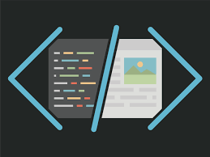

¿Que es Front-End?
Un sistema de front-end es parte de un sistema de información al que el usuario accede directamente e interactua para recibir o utilizar las capacidades de back-end del sistema anfitrión. Permite a los usuarios acceder y solicitar las prestaciones y servicios del sistema de información subyacente. El sistema de front-end puede ser una aplicación de software o hardware o su combinación, así como recursos de la red
Fundamentos de Front-End
- Aprende desarrollo frontend: Fundamentos de HTML, CSS y JavaScript
- Desarrollo frontend con HTML, CSS y JavaScript El curso de desarrollo Frontend comienza con un repaso de los fundamentos de estos lenguajes para aquellos que no tienen conocimientos previos.
• El desarrollo front end es una rama de la informática que se encarga del desarrollo de la interfaz de usuario de una aplicación web o de un sitio web.
• En otras palabras, el desarrollo front end se ocupa de la parte de una aplicación o sitio web que el usuario final puede ver e interactuar directamente.
• El desarrollo front end se enfoca en el diseño y la estructuración de la interfaz de usuario, así como en la creación de elementos gráficos como imágenes, iconos y botones.
• También incluye la programación de la interacción de estos elementos con el usuario, utilizando lenguajes de programación como HTML, CSS y JavaScript.
• l desarrollo front end es una parte esencial del desarrollo web, ya que es la capa que permite al usuario interactuar con la aplicación o sitio web.
• Luego se profundiza en temas más avanzados, como el uso de MVC de cliente, el diseño de juegos, el procesamiento de strings, RegExps, excepciones, AJAX, UX, accesibilidad, SVG, animaciones y PWAs.
• También se estudiarán las distintas metodologías de programación y se profundizará en temas como el diseño gráfico adaptativo, la experiencia de usuario, el SEO y otros temas relacionados.
• Al final del curso, se enseñará cómo empaquetar las aplicaciones diseñadas para que sean aptas en navegadores de dispositivos móviles (Android o iOS) como PWAs.
Licenciatura en Sistemas Computacionales
© Copyright 2023. Yoselin Guadalupe Diaz Martinez